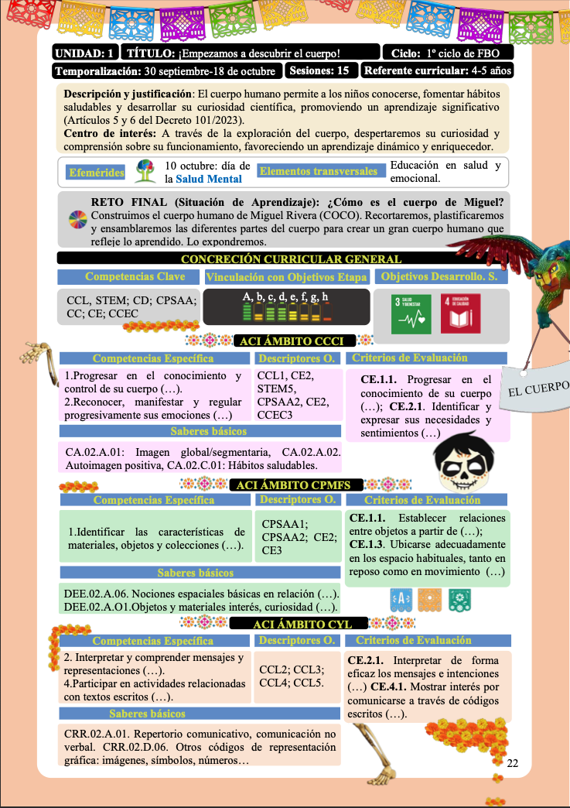
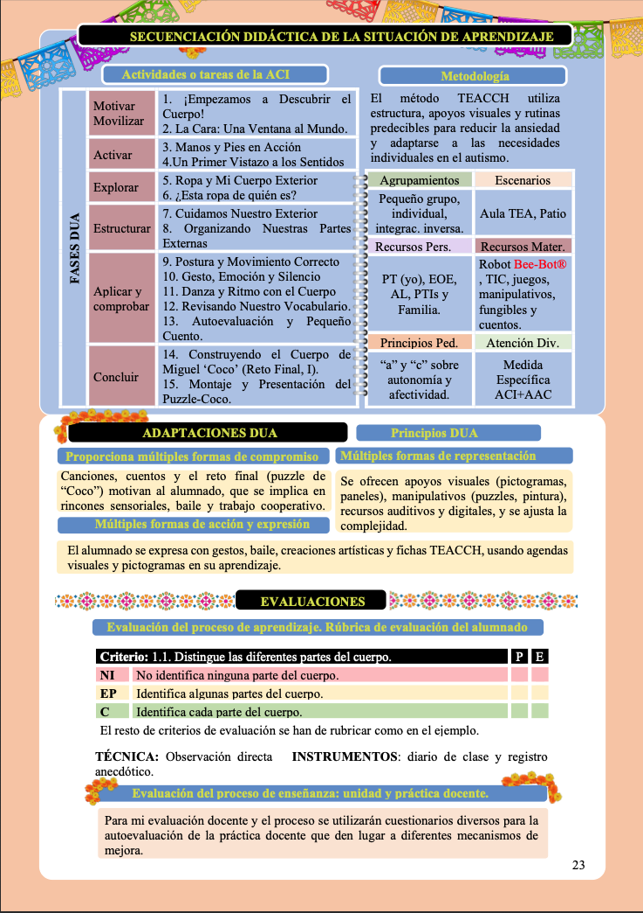

SITUACIÓN DE APRENDIZAJE
TÍTULO: DESCUBRIMOS NUESTRO CUERPO
 
Centro de interés o temática
El centro de interés se enfoca en el conocimiento y descubrimiento del cuerpo humano, visto desde una perspectiva global que incluye aspectos físicos, funcionales y emocionales. A través de explorar las partes del cuerpo, su movimiento y su conexión con las emociones, se apoya la formación de la identidad personal y la comprensión del propio cuerpo.
Nivel al que va dirigido
Dirigida a estudiantes de Educación Infantil (4-5 años), que están en un aula específica TEA, caracterizada por una gran diversidad en sus niveles de desarrollo comunicativo, cognitivo y social, lo que necesita una respuesta educativa muy estructurada e individualizada.
Temporalización aproximada
La situación de aprendizaje se lleva a cabo en 30 días lectivos, organizados en 15 sesiones, permitiendo una intervención gradual, sistemática y adaptada a los ritmos y necesidades de los estudiantes.
Materia o materias implicadas
Se trata de una propuesta global, propia de la etapa de Educación Infantil, que integra diferentes áreas de experiencia:
- Conocimiento de sí mismo y autonomía personal (CCCI)
- Conocimiento del entorno (CPMS)
- Lenguajes: comunicación y representación (CYL)
Esta integración promueve un aprendizaje significativo y práctico, relacionado con la vida diaria de los estudiantes.
Idioma
El idioma utilizado es el castellano, complementado con el uso de sistemas de comunicación aumentativa y alternativa (SAAC), pictogramas y apoyos visuales, que ayudan a la comprensión y expresión de los estudiantes con TEA.
Descripción general
La situación de aprendizaje tiene como objetivo que los estudiantes descubran, reconozcan y se den cuenta de su propio cuerpo, desarrollando habilidades relacionadas con:
- El reconocimiento de las partes del cuerpo
- La coordinación motriz y el control postural
- La expresión y comprensión de emociones a través del cuerpo
- El uso funcional del lenguaje y sistemas de comunicación aumentativa
La propuesta se realiza mediante actividades estructuradas, manipulativas y motivadoras, basadas en el enfoque TEACCH y los principios del Diseño Universal para el Aprendizaje (DUA), asegurando el acceso, la participación y el avance de los estudiantes.
El proceso termina con un reto final, que consiste en la creación del cuerpo de “Miguel (Coco)”, donde los estudiantes integran los aprendizajes adquiridos de manera significativa, favoreciendo la generalización y la transferencia a situaciones reales.
JUSTIFICACIÓN (BASADA EN EL MODELO REFLEXIVO DE GIBBS).
La situación de aprendizaje actual se basa en el análisis reflexivo de la enseñanza usando el modelo de Gibbs, lo que ayuda a guiar su diseño desde una vista de mejora y adaptación al aula TEA.
En la fase de descripción, se considerará que el uso de metodologías activas y herramientas digitales puede mejorar la motivación de los estudiantes, aunque también puede causar problemas en la autonomía, la atención y el uso efectivo de las herramientas. Por eso, se creará una propuesta estructurada, predecible y adaptada.
En cuanto a la fase de sentimientos, se tomará en cuenta la variedad de respuestas de los estudiantes, usando metodologías que brinden seguridad y claridad, como el enfoque TEACCH, que se basa en estructurar el entorno y usar apoyos visuales.
En la fase de evaluación, se considerarán posibles problemas en la autonomía y la participación, aplicando los principios del DUA para ofrecer distintas maneras de implicación, representación y expresión.
Desde el análisis, se valorará la importancia de anticipar las tareas, adaptar los recursos y enseñar de forma clara su uso, incluyendo apoyos visuales y actividades prácticas que fomenten la autonomía gradual. Por último, desde la conclusión, se priorizará una intervención bien planeada, organizada y funcional, enfocada en transferir los aprendizajes a la vida diaria.
En línea con esto, la propuesta se ajusta a los principios de inclusión y equidad establecidos en la LOMLOE (2020) y la Orden de 30 de mayo de 2023.